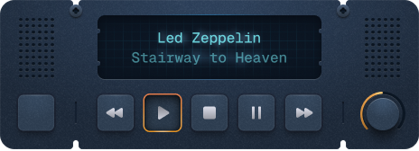
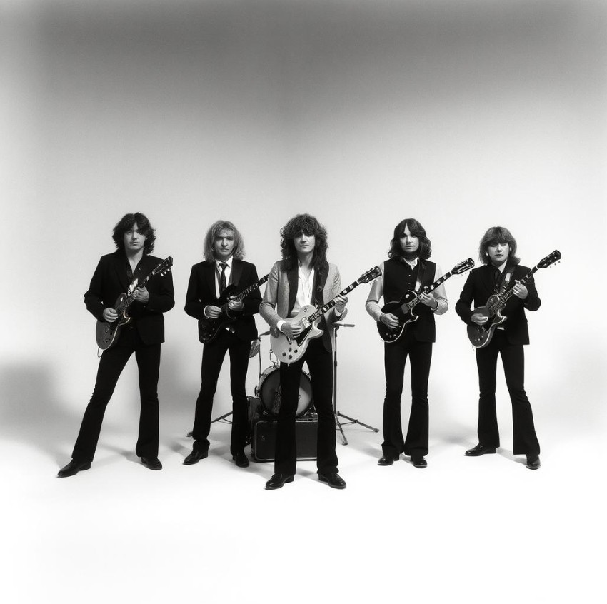

Led Zeppelin
340o
em todo o mundo
Biografia
Uma das bandas mais icônicas e inovadoras da história do Rock 'n Roll clássico com forte influência de Blues.
O vocal marcante de Robert Plant e a sonoridade incrível das guitarras de Jimmy Page impulsionaram o sucesso da banda em mais de 5 décadas.
A banda vendeu mais de 200 milhões de álbuns em todo o mundo, o que comprova de forma irrefutável o sucesso do Led Zeppelin para os amantes de Rock 'n Roll.
Top 10 Músicas
| Músicas | Reproduções |
|---|---|
| 1. Stairway to Heaven | 1.097.357.534 |
| 2. Immigrant Song | 836.174.300 |
| 3. Whole Lotta Love | 670.694.187 |
| 4. Black Dog | 416.485.884 |
| 5. Ramble On | 354.150.438 |
| 6. Kashmir | 330.401.746 |
| 7. Good Times Bad Times | 326.385.135 |
| 8. Rock and Roll | 302.748.773 |
| 9. Going to California | 265.905.234 |
| 10. Over the Hills and Far Away | 146.294.914 |

Estatísticas
20.4 M
ouvintes mensais
ouvintes mensais
22
álbuns totais
álbuns totais
O Led Zeppelin lançou seu primeiro álbum em 1969 e o último álbum da banda foi lançado em 2012.
